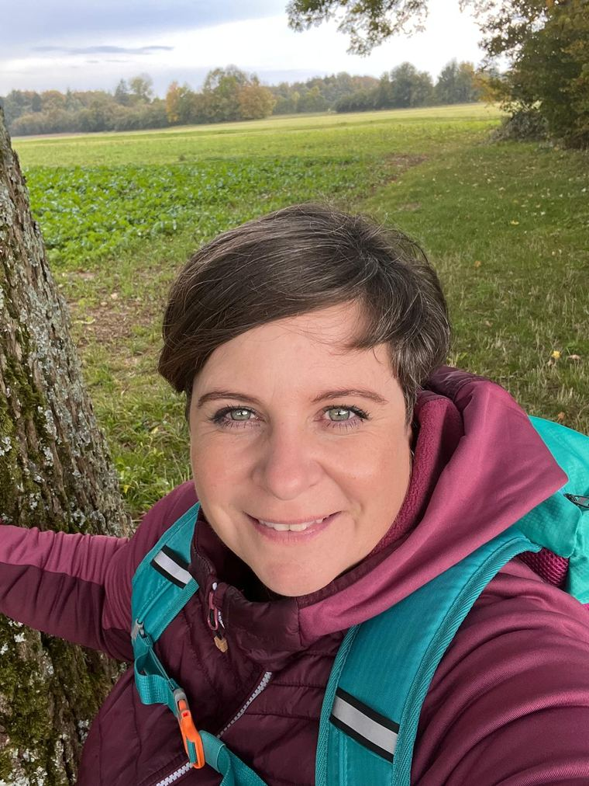
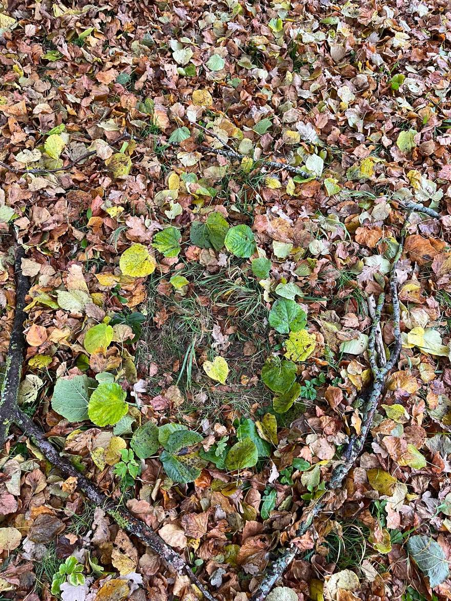
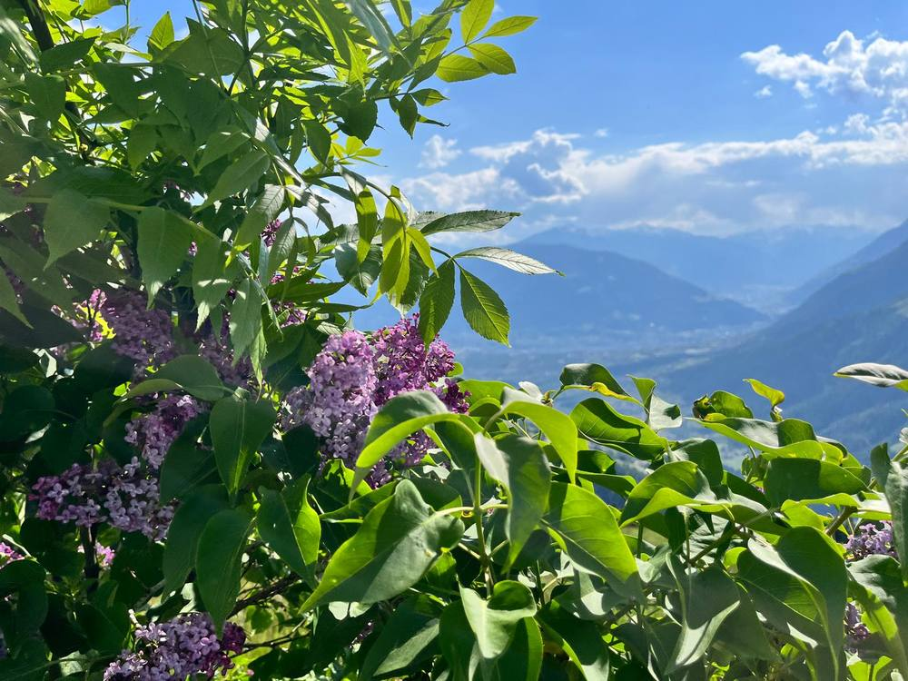

Trauer braucht keinen Termin und keine fertigen Antworten. Sie braucht einen Weg, Zeit und jemanden, der ihn an deiner Seite geht — Schritt für Schritt, mitten in der Natur.
Manche Wege kann man nicht alleine gehen — und muss es auch nicht.
Der Verlust eines Menschen verändert alles. WOIDflüstern ist ein geschützter Raum draußen in der Natur, in dem du nichts leisten und nichts verbergen musst. Wir gehen, wir schweigen, wir sprechen — so, wie es für dich in diesem Moment stimmig ist.
Der Weg dorthin führt nicht um die Trauer herum, sondern hindurch — Schritt für Schritt, in der Natur, an meiner Seite.
Eins-zu-eins unterwegs im Wald. Bewegung bringt ins Fließen, was innen feststeckt — Gedanken, Tränen, Erinnerungen. Du gibst das Tempo vor.
Trauer kennt keinen Fahrplan. In einer längeren Begleitung bin ich verlässlich an deiner Seite — in den ersten schweren Wochen und über die stillen Monate danach.
Ein Ort, ein Baum, ein bewusster Moment in der Natur. Gemeinsam gestalten wir ein Ritual, das deinem Abschied einen Platz gibt — würdevoll und ganz deins.
„Loslassen heißt nicht vergessen. Es heißt, das Schwere anders zu tragen.“Ein Gedanke für unterwegs

Ich bin AlexandraIch habe selbst erfahren, wie es ist, wenn der Boden wegbricht und gut gemeinte Worte ins Leere laufen. Was mir geholfen hat, war nicht der nächste Ratschlag — sondern Zeit, Natur und ein Gegenüber, das es aushält.
Genau das möchte ich weitergeben. In der Natur finden viele Menschen leichter zu ihren Gefühlen: Der Wald nimmt den Druck, er urteilt nicht, und er erinnert daran, dass auf jede Jahreszeit eine neue folgt.
Ich begleite dich achtsam und ohne Eile — als Mensch, nicht als Therapeutin. Was du mir anvertraust, bleibt zwischen uns und den Bäumen.
Du suchst keine Methode und keinen günstigen Tarif — du suchst einen Menschen, dem du in einem der verletzlichsten Momente deines Lebens vertrauen kannst. Ob das passt, entscheidet kein Lebenslauf, sondern ein Gefühl.
Eine kurze Sprachprobe sagt oft mehr als jeder Text — sie wird in Kürze ergänzt.
Ein kostenloses Kennenlernen am Telefon. Du erzählst, was dich bewegt — ganz unverbindlich. Wir spüren, ob es zwischen uns passt.
Wir treffen uns in der Natur und gehen los. Kein Programm, kein Müssen. Es gibt nichts richtig oder falsch zu machen.
Ob ein einzelner Spaziergang oder eine längere Begleitung — du entscheidest, wie weit und wie oft. Ich bleibe verlässlich erreichbar.
Dass die Natur in der Trauer guttut, ist kein Bauchgefühl: Die stressreduzierende Wirkung des Waldes („Waldbaden", japanisch Shinrin Yoku) ist wissenschaftlich gut belegt. Bewegung und frische Luft helfen, Gefühlen Raum zu geben, die drinnen oft feststecken.
Trauer braucht Nähe, keine langen Wege. Deshalb begleite ich dich wohnortnah in den Wäldern rund um Diepersdorf, Leinburg und das Nürnberger Land — vertraute Natur, ohne dass du dafür quer durch Bayern fahren musst.
Mein Einzugsgebiet liegt im Umkreis von rund 50 Kilometern um Diepersdorf. Wir finden gemeinsam einen Wald, der für dich gut und schnell erreichbar ist.
Rund um Diepersdorf im Nürnberger Land. Du bist dir nicht sicher, ob deine Gegend dazugehört? Frag einfach kurz nach — wir finden eine Lösung.
Ein kurzes Telefonat genügt, um zu spüren, ob es passt. Kostenfrei, unverbindlich und ganz in deinem Tempo.


Eine menschliche Begleitung durch deine Trauer, die draußen in der Natur stattfindet. Wir gehen gemeinsam, schweigen oder sprechen — ganz in deinem Tempo. Bewegung und Wald helfen, Gefühlen Raum zu geben.
Nein. Trauerbegleitung ist eine menschliche Begleitung und ersetzt keine ärztliche oder psychotherapeutische Behandlung. In einer akuten Krise hilft die Telefonseelsorge rund um die Uhr kostenfrei unter 0800 111 0 111 oder 0800 111 0 222.
Das erste Kennenlernen am Telefon ist kostenlos und unverbindlich. Was eine Begleitung kostet, besprechen wir vorher transparent und offen — du gehst kein Risiko ein und weißt immer, woran du bist.
Wir gehen bei (fast) jedem Wetter — gerade Regen und Wandel der Jahreszeiten gehören zur Trauer dazu. Aber du entscheidest. Wenn ein Tag zu schwer ist, finden wir einen anderen Weg.
In den Wäldern rund um Diepersdorf, Leinburg und das Nürnberger Land. Den genauen Ort stimmen wir so ab, dass er für dich gut erreichbar ist.
Schreib mir oder ruf an — in deinem Tempo, ohne Verpflichtung. Schon das erste Gespräch kann ein erster Schritt sein.